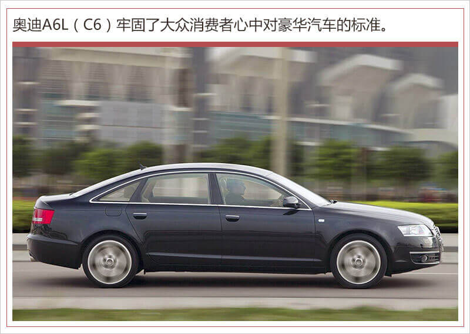

三十年回首，奥迪A6L依旧是豪华市场的王者
2019-01-31 07:001月15日，备受关注的全新奥迪A6L正式上市，打响了2019年中国汽车市场产品攻势的第一枪。连续30年引领豪华C级车市场，190万的用户选择证明它依旧是该市场的王者。
奥迪A6L在中国30年保持成功的决定因素是什么？“前瞻、洞察和求变”是霍弘伟（网通社内容中心执行总编）、虞宁（网通社内容中心副总编）、孙琦（网通社内容中心资讯部主编）三位资深媒体人做出的评价。

1、掌握需求风向，定义“新豪华”
30年前， A6L的前身奥迪100首次引入中国生产，它作为第一台国产“豪华车”，不仅开创了全新细分市场的先河，更为如何满足中国消费者需求树立了典范。
谈起对奥迪A6L的印象，霍弘伟评价道，“从全球市场上看，中国赋予了奥迪A6车型重要的活力，提升了它在奥迪家族中的产品竞争力。在过去的一段时间，不少消费者都是通过它开始认识、了解奥迪这个品牌，从而开始对豪华品牌逐步有了认知，这其中不乏70、80一代（霍弘伟和虞宁都是这一代人中的代表）。”这是奥迪一次极具“前瞻性”的战略决策，也是奥迪A6L在之后30年实现持续领先的关键因素。
从1999年到2005年，首款奥迪A6L（C5）在中国市场累计销售20余万辆，成为汽车工业史上的经典之作。虞宁说道，“奥迪这一次的成功，取决于对中国消费者喜好和需求的“洞悉”。通过加长满足中国消费者对乘坐舒适性的需求，而不是‘说服’消费者，奥迪A6L给一些高高在上的汽车品牌上了一课。”

再之后的A6L（C6）产品中，“小A8”的称号迅速提升了A6的市场口碑，加上官车形象的背书，进一步牢固了奥迪A6L在大众消费者心中对豪华汽车的标准。接近20年的时间里，奥迪A6L成功地画出了中国豪华车需求升级的轨迹。
时至今日，全新奥迪A6L（C8）推向。面对成长于互联网时代的新精英群体对“智能化”的偏好，以及“一车多用”的全场景用车需求，全新奥迪A6L再次调整了豪华的定义，以“驾驭全场景的智能豪华”的概念，提出对豪华C级轿车市场的格局重塑。
一汽-大众奥迪销售事业部执行副总经理荆青春在全新奥迪A6L上市发布会上提到,“全新奥迪A6L既肩负着品牌向上的任务,也是奥迪新品牌主张营销元年的首款车型,其将以满足用户全场景需求的智能体验,为市场呈现出不一样的新豪华。”
从C5首次国产到C8上市，面向中国市场，奥迪一直在寻求量身定制的升级，进一步满足中国消费者不断升级的“刚需”，研发最适合中国道路环境、符合中国车主习惯的技术和车型。在霍弘伟看来：“认真聆听消费者的用车心声、切实做出对需求的变革升级、结合自身品牌的科技优势，由此打造出令越来越多消费者、尤其是年轻消费族群喜爱的全新奥迪A6L则是水到渠成的结果。”
2、贴近市场需求，赢取更多消费者青睐
很长的一段时间奥迪一直以“官车”的形象示人，在那一代用户眼中“沉稳、正派、大气”成为这款车的“代名词”。2014年公务车改革，A6L开始退出政府采购，当时很多人认为奥迪A6L的王位可能不保，事实证明，在消费者心中奥迪A6L始终是豪华C级车的代表。
“由商转民”仅凭借豪华车市场多年的口碑积累是不够的，特别是在市场环境革新和消费需求转变的关键时刻。历经八代更迭的奥迪A6L，此次换代再次超越经典，在造型设计、乘坐空间、驾驶质感，以及智能科技方面，均实现了全面焕新和越级进化。这一次是奥迪在为全新A6L“求变”。
在设计方面，全新奥迪A6L首次出现豪华与运动“双脸”版本，以满足不同场景的用户需求；虚拟座舱与双触屏设计展示了奥迪极具未来感的内饰风格；在智能交互方面，全新奥迪A6L将“端到端”数字化体验引入乘车环境内，包括：匹配4块大屏MMI人机交互系统、矩阵式智能LED大灯、丰富的信息娱乐功能以及奥迪connect服务。
霍弘伟评价道，全新奥迪A6L再次大量采用应用在旗舰车型A8的设计理念，不止配置、科技、以及制造工艺上满足 “新豪华”的定义，同时也抓住了新生代消费群体，去符合年轻消费者对时尚潮流的需求。
虞宁评价说，从官方用车到新时代精英用车、从身份象征到为满足用户各种场景服务，奥迪A6L随着中国新一代消费者价值观的改变而转变，作为第一辆真正意义上的国产豪华车，奥迪A6L基于本土化研发的优势，提供更多符合国内消费者认知的功能配置，已然成为更懂中国的豪华车。
孙琦在谈起全新奥迪A6L时说道，“给我留下最深刻的印象是，一汽-大众奥迪销售事业部执行副总经理荆青春在新车上市发布会上说它‘这也标配，那也标配’。的确，查一查海外官网的选配价格不难发现，矩阵式LED大灯在德国是1,550欧元，约合1.24万人民币，成了全新奥迪A6L的标配，已经很值。另外，智能轻混系统（2.0T为12V轻混/3.0T为48V轻混）、奥迪虚拟座舱也成了标配，进一步超值。” 全新奥迪A6L全系近40项的标准配置，实现了D级车所具备的豪华。
3、智能轻混系统受年轻精英青睐
相比于传统的政商精英，孙琦属于刚刚崛起的一代多元化精英群，他们对于豪华C级车的要求更加均衡，最好同时满足“一车多用”的全能需求。作为汽车媒体从业者的孙琦，全新奥迪A6L标配的高效轻度动力混合系统，平稳、舒适、稳定的智能底盘以及丰富的驾驶辅助系统是他关注的重点。
他说，如果驾驶过全新奥迪A6L之后你会发现，智能轻混系统无疑是它最大的亮点之一。对于2.0T车型而言，这套由12V电机+内燃机组成的轻混系统能够在汽车行驶运转后为发动机启停系统供电，保证启停系统有更快的工作响应速度，从而达到降低发动机启停工作时的震动感。
除了发动机启动时变得更加平顺之外，智能轻混系统的加持，还让全新奥迪A6L在行驶的过程当中具备了滑行功能。时速超过55公里后如果松开油门，发动机会进入关闭状态，踩下油门将再次启动发动机。值得注意的是，发动机再次启动的过程中，并没有出现让人顾虑的顿挫感。
总的来说，全新奥迪A6L还是原来那个舒适、豪华的A6L，同时拥有一种其他车型难以拥有的沉稳气场。在此之上，奥迪又赋予了全新A6L设计上的进化和年轻化、运动元素的叠加。如虞宁所说，全新奥迪A6L的目标更精准、标准再提高，在竞争激烈的豪华中大型车市场格局中，相信全新奥迪A6L将继续是王者。（图/文 网通社 王静亚）